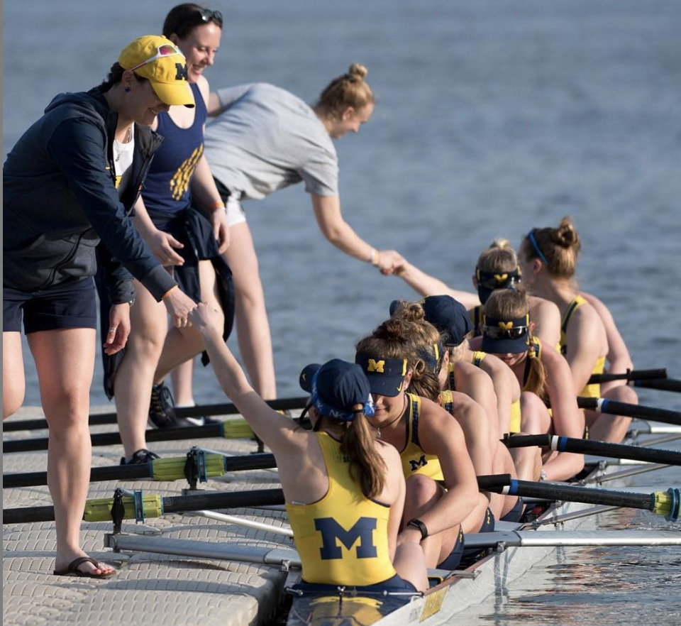
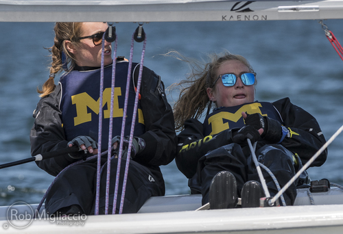
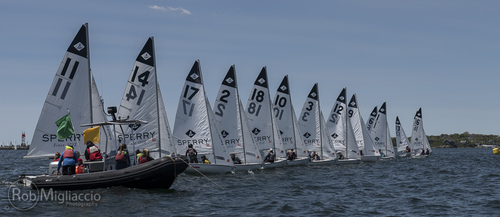
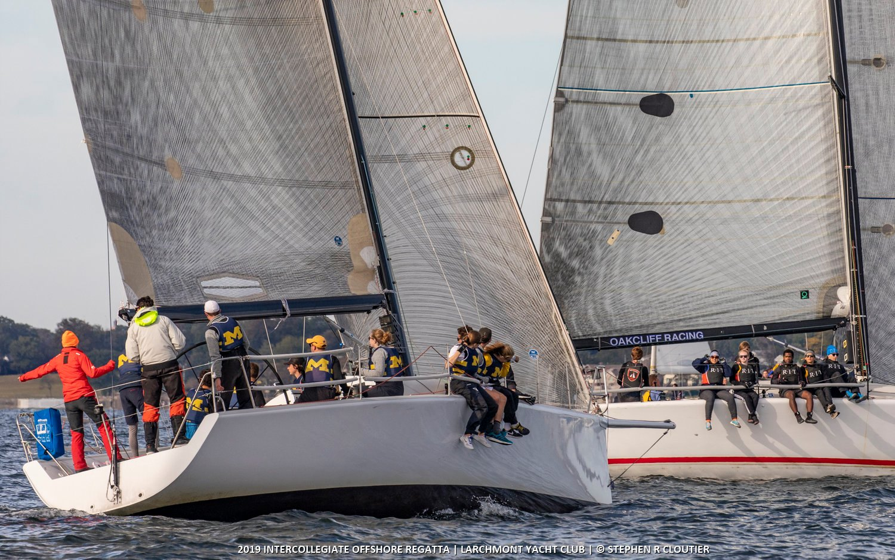
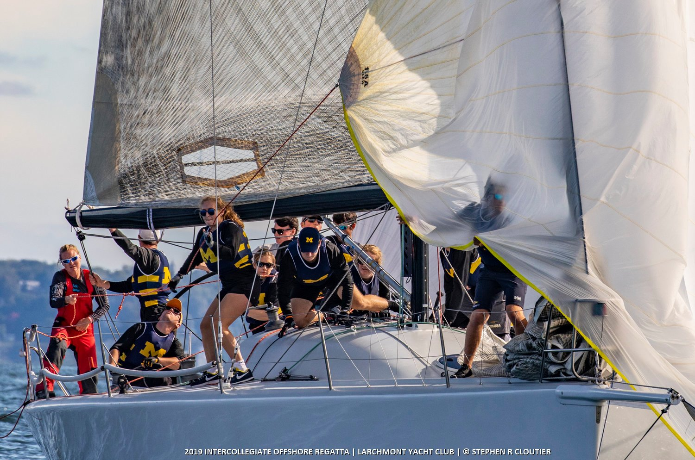
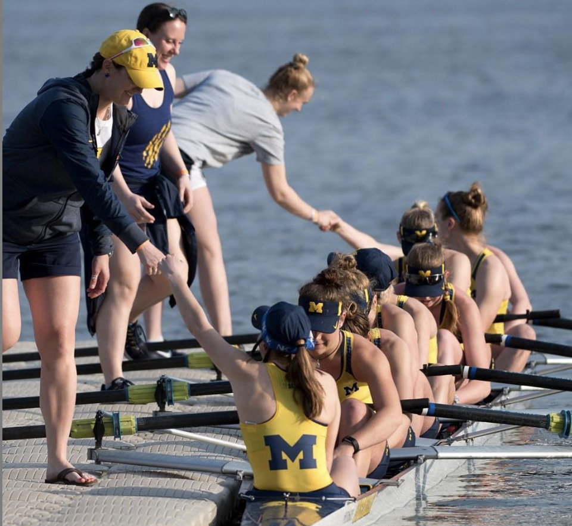
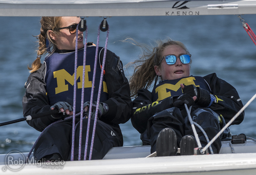
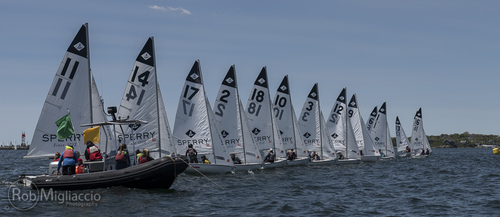
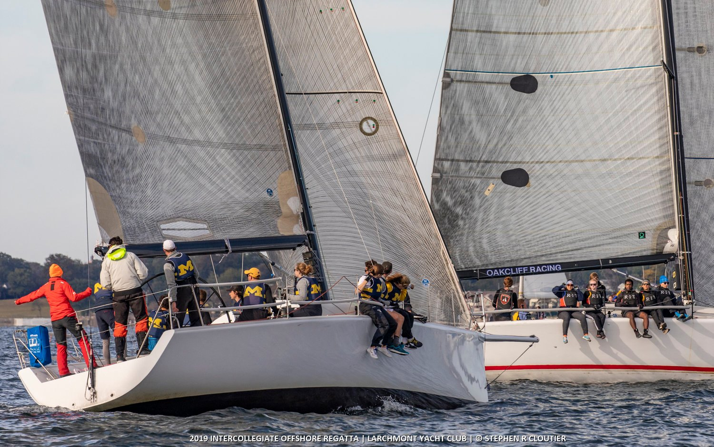
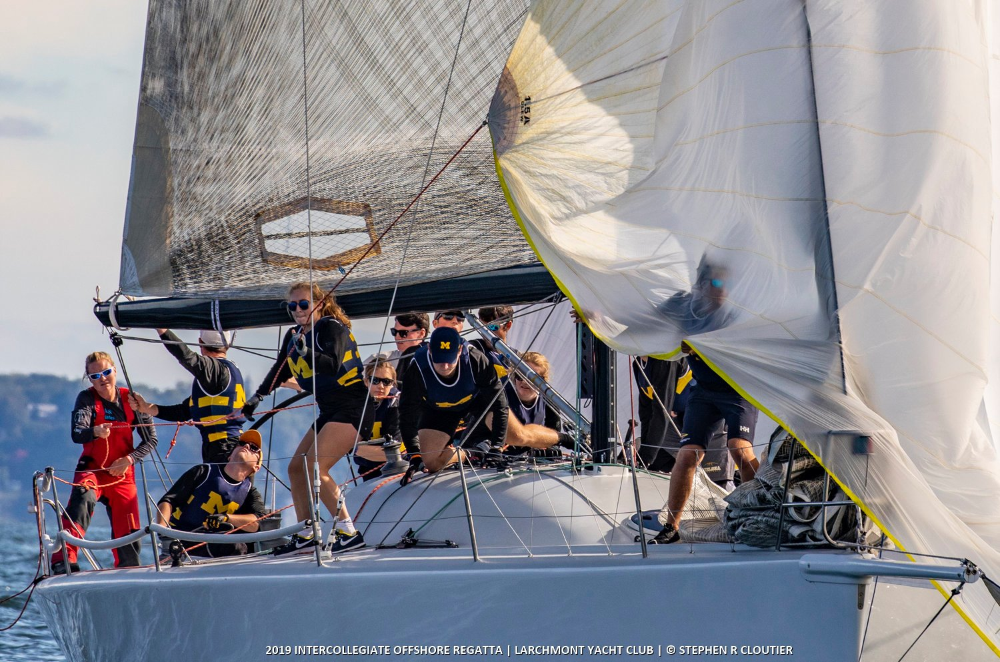

Kristen Picard
About
Just to cover our bases, I'm from Connecticut, and I go to school at the University of Michigan. Whew. That's it. Just kidding! While those statements are true, there are at least a few more things to me. For one thing, I love black beans and rice. No meal is more simple, delicious, filling, and cost efficient. I make it all the time. Sometimes I add a salad or grill up some chicken on the ole George Foreman, but the stars of the show are the beans and rice. In addition to beans and rice, I also enjoy doing anything and everything athletic. I grew up playing sports, I played them in high school, and I continued the habit into college. After a brief stint on the University of Michigan Women's Rowing Team during my freshman year, I joined the University of Michigan Sailing Team. Sailing with the Michigan Sailing Team is a blast. The company is great, and I find few things better than being on the water. Through competing in regattas with the team I've gotten to travel to places and other schools that I might have never otherwise had the chance to visit. These are just a few things about me. There is more--but I'll leave that to the imagination.
 








